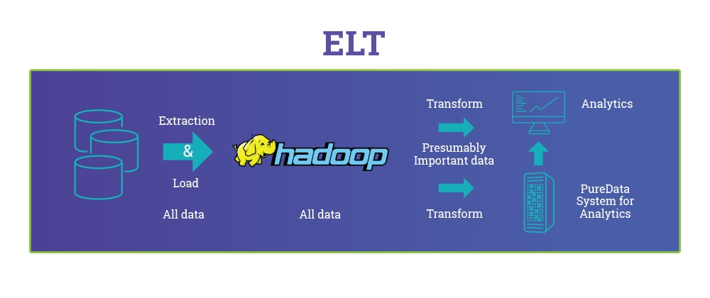

{{appName}}
Datasets
- Load is loaded into Datasets
- Dataset is a colletion of realted data
- Data in dataset is stored in a denormalized, but in highly compressed form
- Dataset can have combined data from different sources, drived(calculated) fields/values and cleaned data
Types Dataset fields
- Date
- Can be represented as a day, month, year, and, optionally, time
- We can group, filter, and perform math on dates
- Dimension
- A dimension is a qualitative value
- Example: region, product name, and model number
- Can’t perform math on dimensions
- Analytics indexes all dimension fields in datasets to improve query performance
- Measure
- A measure is a quantitative value
- Example: total revenue, minimum exchange rate
- Can perform math on measures
Row-level security
- Used to restrict access to records in the dataset
Big NO to all null values!
- Columns with all null values won't be created in datasets and can't be referenced in
- dataflows, lenses, or dashboards
- Consider providing a default value for null values, like n/a or empty
Numberic - Min and Max
- Maximum numeric value that can be stored in a dataset:
+36,028,797,018,963,967 - Minimum numeric value:
-36,028,797,018,963,968 - If any numerical value exceeds the maximum or goes below the minimum, the value overflows and Analytics returns an incorrect result
Date - components
- Second, Minute, Hour
- Day, Week, Month
- Quarter, Year
- Week_Fiscal, Month_Fiscal
- Quarter_Fiscal, Year_Fiscal
- sec_epoch, day_epoch
- General Format: FieldName_
; example: CreateDate_Second - Note: Create_Date file in the date field in the dataset will create conflict!
Date - Formats
- Dates must match the format exactly and can’t have any extra text
- Example: Format: MM-dd-yyyy hh:mm:ss value: 12-31-2015 12:00:00
Date - format symbols
| Symbol | Meaning |
|---|---|
| yyyy or yy | Four-digit year (yyyy) or two-digit year (yy) |
| MM | Two-digit month (01–12) |
| dd | Two-digit day (01–31) |
| ‘T’ | A separator that indicates that time of day follows |
| HH | Two-digit hour (00–23) |
Date format - Symobls - contd.
| Symbol | Meaning |
|---|---|
| mm | Two-digit minute (00–59) |
| ss | Two-digit seconds (00–59) |
| SSS | Optional three-digit milliseconds (000–999) |
| ‘Z’ | The reference UTC time zone |
Fiscal Periods in Analytics
- If the calendar and fiscal year differ, you can enable Analytics to generate the fiscal date fields in the dataset in addition to calendar date fields
- If your fiscal year begins in April, set fiscalMonthOffset to '3'.
- metadata attributes for each date column
Fiscal Year
- Because the fiscal year can start in one calendar year and end in another calendar year, you must specify which year to use for the fiscal year
- The
isYearEndFiscalYearattribute indicates whether the fiscal year is the year in which the fiscal year ends or begins
Fiscal Year - Contd.
isYearEndFiscalYear = true- As shown in the following diagram, any dates between 4/1/2015 and 3/31/2016 are part of the fiscal year 2016 because the fiscal year ends in 2016.

Fiscal Year - Contd.
- As shown in the following diagram, any dates between 4/1/2015 and 3/31/2016 are part of the fiscal year 2015 because the fiscal year begins in 2015.
isYearEndFiscalYear = false
Week Numbering
- For each date loaded into a dataset, Analytics generates the corresponding week number for the calendar year and, if applicable, fiscal year
- Similar to the SOQL function
WEEK_IN_YEAR, week 1 - Week 1 in Analytics = January 1 - January 7.
Week Numbering - contd
- You can configure the week to start on a particular day of the week by setting the
firstDayOfWeekattribute - if January 1 is a Saturday and you configure the week to start on a Monday as
firstDayOfWeek, then week 1 is January 1 - 2. Week 2 starts on Monday, January 3. Week 3 starts January 10, the following Monday. - Notice that week 1 can be a short week to ensure that the subsequent weeks start on the specified day of the week.
Einstein Analytics Connector for Excel
- The Salesforce Einstein Analytics Connector for Excel makes it easy to import data from Microsoft Excel 2013 to Analytics
Inferred Column type
- For external data, Analytics infers metadata about each column of data in the external data file unless you specify different metadata attributes in a metadata file
- A metadata file is a JSON file that describes the structure of an external data file
- If no metadata file is provided when you upload external data, Analytics treats every column as a dimension and sets the field type to 'Text.'
- Note: You can’t perform mathematical calculations on dataset columns with a Text field typ
- After you create a dataset based on an external data file, you can edit the dataset to apply a new metadata file. This enables you to change the metadata attributes of each column.
External Data API
- You can use the External Data API to create a single dataset based on external data in the .csv format
-

Steps in using External API
- Prepare your data in CSV format, and then create a metadata file to specify the structure of the data.
- Connect programmatically to your Salesforce organization.
- Configure the upload by inserting a row into the
InsightsExternalDataobject, and then set input values such as the name of the dataset, the format of the data, and the operation to perform on the data.
Steps in using External API - contd.
- Split your data into 10-MB chunks, and then upload the chunks to
InsightsExternalDataPartobjects. - Start the upload by updating the Action field in the InsightsExternalData object.
- Monitor the InsightsExternalData object for status updates, and then verify that the file upload was successful.
ETL vs ELT
References
Analytics Best Practices: https://developer.salesforce.com/page/Analytics_Best_Practices Best Practices for the Einstein Analytics Integration User: https://help.salesforce.com/articleView?id=000240544&type=1 Docs/Links: Integration Guide: https://resources.docs.salesforce.com/sfdc/pdf/bi_admin_guide_data_integration_guide.pdf Analytics External Data API Developer Guide: https://resources.docs.salesforce.com/212/latest/en-us/sfdc/pdf/bi_dev_guide_ext_data.pdf Analyze your data: https://resources.docs.salesforce.com/210/latest/en-us/sfdc/pdf/analytics.pdf Einstein Analytics Learning Map: http://www.einsteinanalyticslearningmap.com/ Explore Data and Take Action with Einstein Analytics: https://help.salesforce.com/articleView?id=bi.htm&type=5